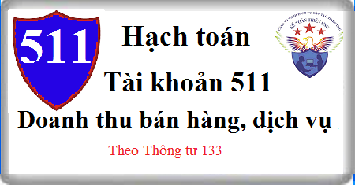

Hướng dẫn cách hạch toán Tài khoản 511 theo thông tư 133, Cách hạch toán doanh thu bán hàng, thành phẩm, cung cấp dịch vụ, cho thuê TSCĐ, bán hàng qua đại lý bán đúng giá hưởng hoa hồng, kết chuyển doanh thu cuối kỳ…
1. Nguyên tắc kế toán Tài khoản 511 - Doanh thu bán hàng và cung cấp dịch vụ
1.1. Tài khoản này dùng để phản ánh doanh thu bán hàng và cung cấp dịch vụ của doanh nghiệp trong một kỳ kế toán của hoạt động sản xuất, kinh doanh từ các giao dịch và các nghiệp vụ sau:
a) Bán hàng hóa: Bán sản phẩm do doanh nghiệp sản xuất ra, bán hàng hóa mua vào và bán bất động sản đầu tư;
b) Cung cấp dịch vụ: Thực hiện công việc đã thỏa thuận theo hợp đồng trong một kỳ, hoặc nhiều kỳ kế toán, như cung cấp dịch vụ vận tải, du lịch, cho thuê TSCĐ theo phương thức cho thuê hoạt động, doanh thu hợp đồng xây dựng....
c) Doanh thu khác.
1.2. Điều kiện ghi nhận doanh thu
a) Doanh nghiệp chỉ ghi nhận doanh thu bán hàng khi đồng thời thỏa mãn các điều kiện sau:
- Doanh nghiệp đã chuyển giao phần lớn rủi ro và lợi ích gắn liền với quyền sở hữu sản phẩm, hàng hóa cho người mua;
- Doanh nghiệp không còn nắm giữ quyền quản lý hàng hóa như người sở hữu hoặc quyền kiểm soát hàng hóa;
- Doanh thu được xác định tương đối chắc chắn. Khi hợp đồng quy định người mua được quyền trả lại sản phẩm, hàng hóa, đã mua theo những điều kiện cụ thể, doanh nghiệp chỉ được ghi nhận doanh thu khi những điều kiện cụ thể đó không còn tồn tại và người mua không được quyền trả lại sản phẩm, hàng hóa (trừ trường hợp khách hàng có quyền trả lại hàng hóa dưới hình thức đổi lại để lấy hàng hóa, dịch vụ khác);
- Doanh nghiệp đã hoặc sẽ thu được lợi ích kinh tế từ giao dịch bán hàng;
- Xác định được các chi phí liên quan đến giao dịch bán hàng.
b) Doanh nghiệp chỉ ghi nhận doanh thu cung cấp dịch vụ khi đồng thời thỏa mãn các điều kiện sau:
- Doanh thu được xác định tương đối chắc chắn. Khi hợp đồng quy định người mua được quyền trả lại dịch vụ đã mua theo những điều kiện cụ thể, doanh nghiệp chỉ được ghi nhận doanh thu khi những điều kiện cụ thể đó không còn tồn tại và người mua không được quyền trả lại dịch vụ đã cung cấp;
- Doanh nghiệp đã hoặc sẽ thu được lợi ích kinh tế từ giao dịch cung cấp dịch vụ đó;
- Xác định được phần công việc đã hoàn thành vào thời điểm báo cáo;
- Xác định được chi phí phát sinh cho giao dịch và chi phí để hoàn thành giao dịch cung cấp dịch vụ đó.
1.3. Trường hợp hợp đồng kinh tế bao gồm nhiều giao dịch, doanh nghiệp phải nhận biết các giao dịch để ghi nhận doanh thu, ví dụ:
- Trường hợp hợp đồng kinh tế quy định việc bán hàng và cung cấp dịch vụ sau bán hàng (ngoài điều khoản bảo hành thông thường), doanh nghiệp phải ghi nhận riêng doanh thu bán hàng và doanh thu cung cấp dịch vụ;
- Trường hợp hợp đồng quy định bên bán hàng chịu trách nhiệm lắp đặt sản phẩm, hàng hóa cho người mua thì doanh thu chỉ được ghi nhận sau khi việc lắp đặt được thực hiện xong;
- Trường hợp doanh nghiệp có nghĩa vụ phải cung cấp cho người mua hàng hóa, dịch vụ miễn phí hoặc chiết khấu, giảm giá, kế toán chỉ ghi nhận doanh thu đối với hàng hóa, dịch vụ phải cung cấp miễn phí đó cho đến khi đã thực hiện nghĩa vụ với người mua.
1.4. Doanh thu bán hàng và cung cấp dịch vụ thuần mà doanh nghiệp thực hiện được trong kỳ kế toán có thể thấp hơn doanh thu bán hàng và cung cấp dịch vụ ghi nhận ban đầu do các nguyên nhân: Doanh nghiệp chiết khấu thương mại, giảm giá hàng đã bán cho khách hàng hoặc hàng đã bán bị trả lại (do không đảm bảo điều kiện về quy cách, phẩm chất ghi trong hợp đồng kinh tế);
Trường hợp sản phẩm, hàng hóa, dịch vụ đã tiêu thụ từ các kỳ trước, đến kỳ sau phải chiết khấu thương mại, giảm giá hàng bán, hoặc hàng bán bị trả lại được ghi giảm doanh thu theo nguyên tắc:
- Nếu sản phẩm, hàng hóa, dịch vụ đã tiêu thụ từ các kỳ trước, đến kỳ sau phải giảm giá, phải chiết khấu thương mại, bị trả lại nhưng phát sinh trước thời điểm phát hành báo cáo tài chính, kế toán phải coi đây là một sự kiện phát sinh sau ngày lập BCTC và ghi giảm doanh thu trên BCTC của kỳ lập báo cáo.
- Trường hợp sản phẩm, hàng hóa, dịch vụ phải giảm giá, phải chiết khấu thương mại, bị trả lại sau thời điểm phát hành Báo cáo tài chính thì doanh nghiệp ghi giảm doanh thu của kỳ phát sinh.
1.5. Doanh thu trong một số trường hợp được xác định như sau:
1.5.1. Doanh thu bán hàng, cung cấp dịch vụ không bao gồm các khoản thuế gián thu phải nộp, như thuế GTGT (kể cả trường hợp nộp thuế GTGT theo phương pháp trực tiếp), thuế TTĐB, thuế xuất khẩu, thuế bảo vệ môi trường.
Trường hợp không tách ngay được số thuế gián thu phải nộp tại thời điểm ghi nhận doanh thu, kế toán được ghi nhận doanh thu bao gồm cả số thuế phải nộp và định kỳ phải ghi giảm doanh thu đối với số thuế gián thu phải nộp. Khi lập báo cáo kết quả kinh doanh, chỉ tiêu “Doanh thu bán hàng và cung cấp dịch vụ” và chỉ tiêu “Các khoản giảm trừ doanh thu” đều không bao gồm số thuế gián thu phải nộp trong kỳ do về bản chất các khoản thuế gián thu không được coi là một bộ phận của doanh thu.
1.5.2. Trường hợp trong kỳ doanh nghiệp đã viết hóa đơn bán hàng và đã thu tiền bán hàng nhưng đến cuối kỳ vẫn chưa giao hàng cho người mua hàng, thì trị giá số hàng này không được coi là đã bán trong kỳ và không được ghi vào tài khoản 511 “Doanh thu bán hàng và cung cấp dịch vụ” mà chỉ hạch toán vào bên Có tài khoản 131 “Phải thu của khách hàng” về khoản tiền đã thu của khách hàng. Khi thực giao hàng cho người mua sẽ hạch toán vào tài khoản 511 “Doanh thu bán hàng và cung cấp dịch vụ” về trị giá hàng đã giao, đã thu trước tiền bán hàng, phù hợp với các điều kiện ghi nhận doanh thu.
1.5.3. Trường hợp xuất hàng hóa để khuyến mại, quảng cáo nhưng khách hàng chỉ được nhận hàng khuyến mại, quảng cáo kèm theo các điều kiện khác như phải mua sản phẩm, hàng hóa (ví dụ như mua 2 sản phẩm được tặng 1 sản phẩm....) thì kế toán phải phân bổ số tiền thu được để tính doanh thu cho cả hàng khuyến mại, giá trị hàng khuyến mại được tính vào giá vốn hàng bán (trường hợp này bản chất giao dịch là giảm giá hàng bán).
1.5.4. Trường hợp doanh nghiệp có doanh thu bán hàng và cung cấp dịch vụ bằng ngoại tệ mà phát sinh giao dịch nhận tiền ứng trước của khách hàng thì doanh thu tương ứng với số tiền nhận ứng trước được ghi nhận theo tỷ giá giao dịch thực tế tại thời điểm nhận ứng trước, phần doanh thu tương ứng với số tiền còn lại được ghi nhận theo tỷ giá giao dịch thực tế tại thời điểm ghi nhận doanh thu.
1.5.5. Doanh thu bán bất động sản của doanh nghiệp là chủ đầu tư phải thực hiện theo nguyên tắc:
Đối với các công trình, hạng mục công trình mà doanh nghiệp là chủ đầu tư (kể cả các công trình, hạng mục công trình doanh nghiệp vừa là chủ đầu tư, vừa tự thi công), doanh nghiệp không được ghi nhận doanh thu bán bất động sản và không được ghi nhận doanh thu đối với số tiền thu trước của khách hàng theo tiến độ. Việc ghi nhận doanh thu bán bất động sản phải đảm bảo thỏa mãn đồng thời 5 điều kiện sau:
- Bất động sản đã hoàn thành toàn bộ và bàn giao cho người mua, doanh nghiệp đã chuyển giao rủi ro và lợi ích gắn liền với quyền sở hữu bất động sản cho người mua;
- Doanh nghiệp không còn nắm giữ quyền quản lý bất động sản như người sở hữu bất động sản hoặc quyền kiểm soát bất động sản;
- Doanh thu được xác định tương đối chắc chắn;
- Doanh nghiệp đã thu được hoặc sẽ thu được lợi ích kinh tế từ giao dịch bán bất động sản;
- Xác định được chi phí liên quan đến giao dịch bán bất động sản.
1.5.6. Đối với hàng hóa nhận bán đại lý, ký gửi theo phương thức bán đúng giá hưởng hoa hồng, doanh thu là phần hoa hồng bán hàng mà doanh nghiệp được hưởng.
1.5.7. Đối với hoạt động dịch vụ ủy thác xuất nhập khẩu, doanh thu là phí ủy thác đơn vị được hưởng.
1.5.8. Đối với đơn vị nhận gia công vật tư, hàng hóa, doanh thu là số tiền gia công thực tế được hưởng, không bao gồm giá trị vật tư, hàng hóa nhận gia công.
1.5.9. Trường hợp bán hàng theo phương thức trả chậm, trả góp, doanh thu được xác định theo giá bán trả tiền ngay;
1.5.10. Nguyên tắc ghi nhận và xác định doanh thu của hợp đồng xây dựng:
a) Doanh thu của hợp đồng xây dựng bao gồm:
- Doanh thu ban đầu được ghi trong hợp đồng;
- Các khoản tăng, giảm khi thực hiện hợp đồng, các khoản tiền thưởng và các khoản thanh toán khác nếu các khoản này có khả năng làm thay đổi doanh thu, và có thể xác định được một cách đáng tin cậy:
+ Doanh thu của hợp đồng có thể tăng hay giảm ở từng thời kỳ, ví dụ: Nhà thầu và khách hàng có thể đồng ý với nhau về các thay đổi và các yêu cầu làm tăng hoặc giảm doanh thu của hợp đồng trong kỳ tiếp theo so với hợp đồng được chấp thuận lần đầu tiên; Doanh thu đã được thỏa thuận trong hợp đồng với giá cố định có thể tăng vì lý do giá cả tăng lên; Doanh thu theo hợp đồng có thể bị giảm do nhà thầu không thực hiện đúng tiến độ hoặc không đảm bảo chất lượng xây dựng theo thỏa thuận trong hợp đồng; Khi hợp đồng với giá cố định quy định mức giá cố định cho một đơn vị sản phẩm hoàn thành thì doanh thu theo hợp đồng sẽ tăng hoặc giảm khi khối lượng sản phẩm tăng hoặc giảm.
+ Khoản tiền thưởng là các khoản phụ thêm trả cho nhà thầu nếu nhà thầu thực hiện hợp đồng đạt hay vượt mức yêu cầu. Khoản tiền thưởng được tính vào doanh thu của hợp đồng xây dựng khi có đủ 2 điều kiện: (i) Chắc chắn đạt hoặc vượt mức một số tiêu chuẩn cụ thể đã được ghi trong hợp đồng; (ii) Khoản tiền thưởng được xác định một cách đáng tin cậy.
- Khoản thanh toán khác mà nhà thầu thu được từ khách hàng hay một bên khác để bù đắp cho các chi phí không bao gồm trong giá hợp đồng. Ví dụ: Sự chậm trễ do khách hàng gây nên; Sai sót trong các chỉ tiêu kỹ thuật hoặc thiết kế và các tranh chấp về các thay đổi trong việc thực hiện hợp đồng. Việc xác định doanh thu tăng thêm từ các khoản thanh toán trên còn tùy thuộc vào rất nhiều yếu tố không chắc chắn và thường phụ thuộc vào kết quả của nhiều cuộc đàm phán. Do đó, các khoản thanh toán khác chỉ được tính vào doanh thu của hợp đồng xây dựng khi:
+ Các cuộc thỏa thuận đã đạt được kết quả là khách hàng sẽ chấp thuận bồi thường;
+ Khoản thanh toán khác được khách hàng chấp thuận và có thể xác định được một cách đáng tin cậy.
b) Ghi nhận doanh thu của hợp đồng xây dựng như sau:
Khi kết quả thực hiện hợp đồng xây dựng được xác định một cách đáng tin cậy và được khách hàng xác nhận, thì doanh thu và chi phí liên quan đến hợp đồng được ghi nhận tương ứng với phần công việc đã hoàn thành được khách hàng xác nhận trong kỳ phản ánh trên hóa đơn đã lập.
c) Khi kết quả thực hiện hợp đồng xây dựng không thể ước tính được một cách đáng tin cậy, thì:
- Doanh thu chỉ được ghi nhận tương đương với chi phí của hợp đồng đã phát sinh mà việc được hoàn trả là tương đối chắc chắn;
- Chi phí của hợp đồng chỉ được ghi nhận là chi phí trong kỳ khi các chi phí này đã phát sinh.
1.5.11. Không ghi nhận doanh thu bán hàng, cung cấp dịch vụ đối với:
- Trị giá hàng hóa, vật tư, bán thành phẩm xuất giao cho bên ngoài gia công chế biến; Trị giá hàng gửi bán theo phương thức gửi bán đại lý, ký gửi (chưa được xác định là đã bán);
- Số tiền thu được từ việc bán sản phẩm sản xuất thử;
- Các khoản doanh thu hoạt động tài chính;
- Các khoản thu nhập khác.
2. Kết cấu và nội dung Tài khoản 511 - Doanh thu bán hàng và cung cấp dịch vụ
Bên Nợ:
- Các khoản thuế gián thu phải nộp (GTGT, TTĐB, XK, BVMT);
- Các khoản giảm trừ doanh thu;
- Kết chuyển doanh thu thuần vào tài khoản 911 "Xác định kết quả kinh doanh".
Bên Có: Doanh thu bán sản phẩm, hàng hóa, bất động sản đầu tư và cung cấp dịch vụ của doanh nghiệp thực hiện trong kỳ kế toán.
Tài khoản 511 không có số dư cuối kỳ.
Tài khoản 511 - Doanh thu bán hàng và cung cấp dịch vụ, có 4 tài khoản cấp 2:
- Tài khoản 5111 - Doanh thu bán hàng hóa: Tài khoản này dùng để phản ánh doanh thu và doanh thu thuần của khối lượng hàng hóa được xác định là đã bán trong một kỳ kế toán của doanh nghiệp. Tài khoản này chủ yếu dùng cho các ngành kinh doanh hàng hóa, vật tư, lương thực,...
- Tài khoản 5112 - Doanh thu bán thành phẩm: Tài khoản này dùng để phản ánh doanh thu và doanh thu thuần của khối lượng sản phẩm (thành phẩm, bán thành phẩm) được xác định là đã bán trong một kỳ kế toán của doanh nghiệp. Tài khoản này chủ yếu dùng cho các ngành sản xuất vật chất như: Công nghiệp, nông nghiệp, xây lắp, ngư nghiệp, lâm nghiệp,...
- Tài khoản 5113 - Doanh thu cung cấp dịch vụ: Tài khoản này dùng để phản ánh doanh thu và doanh thu thuần của khối lượng dịch vụ đã hoàn thành, đã cung cấp cho khách hàng và được xác định là đã bán trong một kỳ kế toán. Tài khoản này chủ yếu dùng cho các ngành kinh doanh dịch vụ như: Giao thông vận tải, bưu điện, du lịch, dịch vụ công cộng, dịch vụ khoa học, kỹ thuật, dịch vụ kế toán, kiểm toán,...
- Tài khoản 5118 - Doanh thu khác: Tài khoản này dùng để phản ánh về doanh thu nhượng bán, thanh lý bất động sản đầu tư, các khoản trợ cấp, trợ giá của Nhà nước…
3. Cách hạch toán Doanh thu bán hàng cung cấp dịch vụ Tài khoản 511:
3.1. Doanh thu của khối lượng sản phẩm (thành phẩm, bán thành phẩm), hàng hoá, dịch vụ đã được xác định là đã bán trong kỳ kế toán:
a) Đối với sản phẩm, hàng hoá, dịch vụ, bất động sản đầu tư thuộc đối tượng chịu thuế GTGT, thuế tiêu thụ đặc biệt, thuế xuất khẩu, thuế bảo vệ môi trường, kế toán phản ánh doanh thu bán hàng và cung cấp dịch vụ theo giá bán chưa có thuế, các khoản thuế gián thu phải nộp (chi tiết từng loại thuế) được tách riêng ngay khi ghi nhận doanh thu (kể cả thuế GTGT phải nộp theo phương pháp trực tiếp), ghi:
Nợ các Tài khoản 111, 112, 131,... (tổng giá thanh toán)
Có TK 511 - Doanh thu bán hàng và cung cấp dịch vụ (giá chưa có thuế)
Có TK 333 Thuế và các khoản phải nộp Nhà nước.
b) Trường hợp không tách ngay được các khoản thuế phải nộp, kế toán ghi nhận doanh thu bao gồm cả thuế phải nộp. Định kỳ kế toán xác định nghĩa vụ thuế phải nộp và ghi giảm doanh thu, ghi:
Nợ TK 511 - Doanh thu bán hàng và cung cấp dịch vụ
Có TK 333 - Thuế và các khoản phải nộp Nhà nước.
3.2. Trường hợp, doanh thu bán hàng và cung cấp dịch vụ phát sinh bằng ngoại tệ:
- Ngoài việc ghi sổ kế toán chi tiết số nguyên tệ đã thu hoặc phải thu, kế toán phải căn cứ vào tỷ giá giao dịch thực tế tại thời điểm phát sinh nghiệp vụ kinh tế để quy đổi ra đơn vị tiền tệ kế toán để hạch toán vào tài khoản 511 "Doanh thu bán hàng và cung cấp dịch vụ".
- Trường hợp có nhận tiền ứng trước của khách hàng bằng ngoại tệ thì doanh thu tương ứng với số tiền ứng trước được ghi nhận theo tỷ giá giao dịch thực tế tại thời điểm nhận ứng trước, phần doanh thu tương ứng với số tiền còn lại được ghi nhận theo tỷ giá giao dịch thực tế tại thời điểm ghi nhận doanh thu, ghi:
Nợ các TK 111, 112, 131,...
Có TK 511 - Doanh thu bán hàng và cung cấp dịch vụ (giá chưa có thuế)
Có TK 333 - Thuế và các khoản phải nộp Nhà nước
3.3. Đối với giao dịch hàng đổi hàng không tương tự:
- Khi xuất sản phẩm, hàng hoá đổi lấy vật tư, hàng hoá, TSCĐ không tương tự, kế toán phản ánh doanh thu bán hàng để đổi lấy vật tư, hàng hoá, TSCĐ khác theo giá trị hợp lý tài sản nhận về sau khi điều chỉnh các khoản tiền thu thêm hoặc trả thêm. Trường hợp không xác định được giá trị hợp lý tài sản nhận về thì doanh thu xác định theo giá trị hợp lý của tài sản mang đi trao đổi sau khi điều chỉnh các khoản tiền thu thêm hoặc trả thêm
- Khi ghi nhận doanh thu, ghi:
Nợ TK 131 - Phải thu khách hàng (tổng giá thanh toán)
Có TK 511 - Doanh thu bán hàng và cung cấp dịch vụ (giá chưa có thuế)
Có TK 333 - Thuế và các khoản phải nộp Nhà nước.
Đồng thời ghi nhận giá vốn hàng mang đi trao đổi, ghi:
Nợ TK 632 Giá vốn hàng bán
Có các Tài khoản 155, 156
- Khi nhận vật tư, hàng hoá, TSCĐ do trao đổi, kế toán phản ánh giá trị vật tư, hàng hoá, TSCĐ nhận được do trao đổi, ghi:
Nợ các Tài khoản 152, 153, 156, 211,... (giá mua chưa có thuế GTGT)
Nợ TK 133 - Thuế GTGT được khấu trừ (nếu có)
Có TK 131 - Phải thu của khách hàng (tổng giá thanh toán).
- Trường hợp được thu thêm tiền do giá trị hợp lý của sản phẩm, hàng hoá đưa đi trao đổi lớn hơn giá trị hợp lý của vật tư, hàng hoá, TSCĐ nhận được do trao đổi thì khi nhận được tiền của bên có vật tư, hàng hoá, TSCĐ trao đổi, ghi:
Nợ các TK 111, 112 (số tiền đã thu thêm)
Có TK 131 - Phải thu của khách hàng.
- Trường hợp phải trả thêm tiền do giá trị hợp lý của sản phẩm, hàng hoá đưa đi trao đổi nhỏ hơn giá trị hợp lý của vật tư, hàng hoá, TSCĐ nhận được do trao đổi thì khi trả tiền cho bên có vật tư, hàng hoá, TSCĐ trao đổi, ghi:
Nợ TK 131 - Phải thu của khách hàng
Có các TK 111, 112, ...
3.4. Khi bán hàng hoá theo phương thức trả chậm, trả góp:
- Khi bán hàng trả chậm, trả góp, kế toán phản ánh doanh thu bán hàng theo giá bán trả tiền ngay chưa có thuế, ghi :
Nợ TK 131 - Phải thu của khách hàng
Có TK 511- Doanh thu bán hàng và cung cấp dịch vụ (giá bán trả tiền ngay chưa có thuế)
Có TK 333 - Thuế và các khoản phải nộp Nhà nước (3331, 3332).
Có TK 3387 Doanh thu chưa thực hiện (chênh lệch giữa tổng số tiền theo giá bán trả chậm, trả góp với giá bán trả tiền ngay).
Định kỳ, ghi nhận doanh thu tiền lãi bán hàng trả chậm, trả góp trong kỳ, ghi:
Nợ TK 3387 - Doanh thu chưa thực hiện
Có TK 515 - Doanh thu hoạt động tài chính (lãi trả chậm, trả góp).
3.5. Khi cho thuê hoạt động TSCĐ và cho thuê hoạt động bất động sản đầu tư, kế toán phản ánh doanh thu phải phù hợp với dịch vụ cho thuê hoạt động TSCĐ và cho thuê hoạt động bất động sản đầu tư đã hoàn thành từng kỳ. Khi phát hành hoá đơn thanh toán tiền thuê hoạt động TSCĐ và cho thuê hoạt động bất động sản đầu tư, ghi:
Nợ TK 131 - Phải thu của khách hàng (nếu chưa nhận được tiền ngay)
Nợ các TK 111, 112 (nếu thu được tiền ngay)
Có TK 511 - Doanh thu bán hàng và cung cấp dịch vụ
Có TK 3331 - Thuế GTGT phải nộp.
3.6. Trường hợp thu trước tiền nhiều kỳ về cho thuê hoạt động TSCĐ và cho thuê hoạt động bất động sản đầu tư :
- Khi nhận tiền của khách hàng trả trước về cho thuê hoạt động TSCĐ và cho thuê hoạt động bất động sản đầu tư cho nhiều kỳ, ghi:
Nợ các TK 111, 112 (tổng số tiền nhận trước)
Có TK 3387- Doanh thu chưa thực hiện (giá chưa có thuế GTGT)
Có TK 3331- Thuế GTGT phải nộp.
- Định kỳ, tính và kết chuyển doanh thu của kỳ kế toán, ghi:
Nợ TK 3387 - Doanh thu chưa thực hiện
Có TK 511- Doanh thu bán hàng và cung cấp dịch vụ (5113, 5117).
- Số tiền phải trả lại cho khách hàng vì hợp đồng cho thuê hoạt động TSCĐ và cho thuê hoạt động bất động sản đầu tư không được thực hiện tiếp hoặc thời gian thực hiện ngắn hơn thời gian đã thu tiền trước (nếu có), ghi:
Nợ TK 3387- Doanh thu chưa thực hiện (giá chưa có thuế GTGT)
Nợ TK 3331- Thuế GTGT phải nộp (số tiền trả lại cho bên thuê về thuế GTGT của hoạt động cho thuê tài sản không được thực hiện)
Có các TK 111, 112,... (tổng số tiền trả lại).
3.7. Trường hợp bán hàng thông qua đại lý bán đúng giá hưởng hoa hồng
a) Kế toán ở đơn vị giao hàng đại lý:
- Khi xuất kho sản phẩm, hàng hoá giao cho các đại lý phải lập Phiếu xuất kho hàng gửi bán đại lý. Căn cứ vào phiếu xuất kho hàng gửi bán đại lý, ghi:
Nợ TK 157 Hàng gửi đi bán
Có các Tài khoản 156, 155.
- Khi hàng hoá giao cho đại lý đã bán được, căn cứ vào Bảng kê hoá đơn bán ra của hàng hoá đã bán do các bên nhận đại lý hưởng hoa hồng lập gửi về kế toán phản ánh doanh thu bán hàng theo giá bán chưa có thuế GTGT, ghi:
Nợ các TK 111, 112, 131,... (tổng giá thanh toán)
Có TK 511 - Doanh thu bán hàng và cung cấp dịch vụ
Có TK 3331 - Thuế GTGT phải nộp (33311).
Đồng thời phản ánh giá vốn của hàng bán ra, ghi:
Nợ TK 632 - Giá vốn hàng bán
Có TK 157 - Hàng gửi đi bán.
- Số tiền hoa hồng phải trả cho đơn vị nhận bán hàng đại lý hưởng hoa hồng, ghi:
Nợ TK 642 - Chi phí quản lý kinh doanh (6421) (hoa hồng đại lý chưa có thuế GTGT)
Nợ TK 133 - Thuế GTGT được khấu trừ (1331)
Có các TK 111, 112, 131, …
b) Kế toán ở đơn vị nhận đại lý, bán đúng giá hưởng hoa hồng:
- Khi nhận hàng đại lý bán đúng giá hưởng hoa hồng, doanh nghiệp chủ động theo dõi và ghi chép thông tin về toàn bộ giá trị hàng hoá nhận bán đại lý trong phần thuyết minh Báo cáo tài chính.
- Khi hàng hoá nhận bán đại lý đã bán được, căn cứ vào Hoá đơn GTGT hoặc Hoá đơn bán hàng và các chứng từ liên quan, kế toán phản ánh số tiền bán hàng đại lý phải trả cho bên giao hàng, ghi:
Nợ các TK 111, 112, 131, ...
Có TK 331 - Phải trả cho người bán (tổng giá thanh toán).
- Định kỳ, khi xác định doanh thu hoa hồng bán hàng đại lý được hưởng, ghi:
Nợ TK 331 - Phải trả cho người bán
Có TK 511 - Doanh thu bán hàng và cung cấp dịch vụ
Có TK 3331 - Thuế GTGT phải nộp (nếu có).
- Khi trả tiền bán hàng đại lý cho bên giao hàng, ghi:
Nợ TK 331 - Phải trả cho người bán
Có các TK 111, 112.
3.8. Đối với sản phẩm, hàng hoá, dịch vụ xuất bán cho các đơn vị hạch toán phụ thuộc trong nội bộ doanh nghiệp.
3.8.1. Trường hợp không ghi nhận doanh thu giữa các khâu trong nội bộ doanh nghiệp, chỉ ghi nhận doanh thu khi thực bán hàng ra bên ngoài:
a) Kế toán tại đơn vị bán
- Khi xuất sản phẩm, hàng hoá, dịch vụ đến các đơn vị hạch toán phụ thuộc trong nội bộ doanh nghiệp, kế toán lập Phiếu xuất kho kiêm vận chuyển nội bộ hoặc hóa đơn GTGT, ghi:
Nợ TK 136 - Phải thu nội bộ (giá vốn)
Có các TK 155, 156
Có TK 333 - Thuế và các khoản phải nộp Nhà nước.
- Khi nhận được thông báo từ đơn vị mua là sản phẩm, hàng hóa đã được tiêu thụ ra bên ngoài, đơn vị bán ghi nhận doanh thu, giá vốn:
+ Phản ánh giá vốn hàng bán, ghi:
Nợ TK 632 - Giá vốn hàng bán
Có 136 - Phải thu nội bộ.
+ Phản ánh doanh thu, ghi:
Nợ TK 136 - Phải thu nội bộ
Có TK 511 - Doanh thu bán hàng và cung cấp dịch vụ.
b) Kế toán tại đơn vị mua
- Khi nhận được sản phẩm, hàng hoá, dịch vụ do đơn vị hạch toán phụ thuộc trong nội bộ doanh nghiệp chuyển đến, kế toán căn cứ vào các chứng từ có liên quan, ghi:
Nợ các TK 155, 156 (giá vốn)
Nợ TK 133 - Thuế GTGT được khấu trừ (nếu có)
Có TK 336 - Phải trả nội bộ.
- Khi bán sản phẩm, hàng hoá, dịch vụ ra bên ngoài, kế toán ghi nhận doanh thu, giá vốn như giao dịch bán hàng thông thường.
- Trường hợp đơn vị hạch toán phụ thuộc không được phân cấp hạch toán đến kết quả kinh doanh sau thuế, kế toán phải kết chuyển doanh thu, giá vốn cho đơn vị cấp trên:
+ Kết chuyển giá vốn, ghi:
Nợ TK 336 - Phải trả nội bộ
Có TK 632 - Giá vốn hàng bán.
+ Kết chuyển doanh thu, ghi:
Nợ TK 511 - Doanh thu bán hàng và cung cấp dịch vụ
Có TK 336 - Phải trả nội bộ.
3.8.2. Trường hợp doanh nghiệp ghi nhận doanh thu bán hàng cho các đơn vị trong nội bộ doanh nghiệp, ghi:
a) Kế toán tại đơn vị bán
- Khi xuất sản phẩm, hàng hoá, dịch vụ bán các đơn vị hạch toán phụ thuộc trong nội bộ doanh nghiệp, kế toán ghi nhận doanh thu như sau:
Nợ các TK 136 - Phải thu nội bộ
Có TK 511 - Doanh thu bán hàng và cung cấp dịch vụ (chi tiết giao dịch bán hàng nội bộ)
Có TK 333 - Thuế và các khoản phải nộp Nhà nước.
- Ghi nhận giá vốn hàng bán như giao dịch bán hàng thông thường.
b) Kế toán tại đơn vị mua:
- Khi bán sản phẩm, hàng hóa, dịch vụ mua của đơn vị trong nội bộ, kế toán ghi nhận doanh thu, giá vốn như giao dịch bán hàng thông thường.
3.9. Đối với hoạt động gia công hàng hoá tại đơn vị nhận gia công:
- Khi nhận hàng để gia công, doanh nghiệp chủ động theo dõi và ghi chép thông tin về toàn bộ giá trị vật tư, hàng hoá nhận gia công trong phần thuyết minh Báo cáo tài chính.
- Khi xác định doanh thu từ số tiền gia công thực tế được hưởng, ghi:
Nợ các TK 111, 112, 131, ...
Có TK 511- Doanh thu bán hàng và cung cấp dịch vụ
Có TK 3331 - Thuế GTGT phải nộp (33311).
3.10. Kế toán doanh thu hợp đồng xây dựng.
- Khi kết quả thực hiện hợp đồng xây dựng được xác định một cách đáng tin cậy và được khách hàng xác nhận, thì kế toán phải lập Hoá đơn GTGT trên cơ sở phần công việc đã hoàn thành được khách hàng xác nhận, căn cứ vào Hoá đơn GTGT, ghi:
Nợ các TK 111, 112, 131, ...
Có TK 511 - Doanh thu bán hàng và cung cấp dịch vụ (5113)
Có TK 3331 - Thuế GTGT phải nộp.
- Khoản tiền thưởng thu được từ khách hàng trả phụ thêm cho nhà thầu khi thực hiện hợp đồng đạt hoặc vượt một số chỉ tiêu cụ thể đã được ghi trong hợp đồng, ghi:
Nợ các TK 111, 112, 131, ...
Có TK 511 - Doanh thu bán hàng và cung cấp dịch vụ (5111)
Có TK 3331 - Thuế GTGT phải nộp.
- Khoản bồi thường thu được từ khách hàng hay bên khác để bù đắp cho các chi phí không bao gồm trong giá trị hợp đồng (ví dụ: Sự chậm trễ do khách hàng gây nên; sai sót trong các chỉ tiêu kỹ thuật hoặc thiết kế và các tranh chấp về các thay đổi trong việc thực hiện hợp đồng), ghi:
Nợ các TK 111, 112, 131, ...
Có TK 511 - Doanh thu bán hàng và cung cấp dịch vụ (5111)
Có TK 3331 - Thuế GTGT phải nộp (nếu có).
- Khi nhận được tiền thanh toán khối lượng công trình hoàn thành hoặc khoản ứng trước từ khách hàng, ghi:
Nợ các TK 111, 112, ...
Có TK 131 - Phải thu của khách hàng.
3.11. Kế toán bán, thanh lý bất động sản đầu tư
- Ghi nhận doanh thu bán bất động sản đầu tư
Nợ các TK 111, 112, 131, ... (tổng giá thanh toán)
Có TK 5118 - Doanh thu khác
Có TK 3331 - Thuế GTGT (33311).
- Ghi nhận giá vốn bất động sản đầu tư, ghi:
Nợ TK 632 - Giá vốn hàng bán (giá trị còn lại)
Nợ TK 214 Hao mòn lũy kế (2147) (nếu có)
Có TK 217 Bất động sản đầu tư (nguyên giá).
3.12. Trường hợp trả lương cho công nhân viên và người lao động khác bằng sản phẩm, hàng hoá: Kế toán phải ghi nhận doanh thu đối với sản phẩm, hàng hóa như đối với giao dịch bán hàng thông thường, ghi:
Nợ TK 334 - Phải trả người lao động (tổng giá thanh toán)
Có TK 511 - Doanh thu bán hàng và cung cấp dịch vụ
Có TK 3331 - Thuế GTGT phải nộp (33311).
3.13. Trường hợp sử dụng sản phẩm, hàng hoá để biếu, tặng cho cán bộ công nhân viên được trang trải bằng quỹ khen thưởng, phúc lợi: Kế toán phải ghi nhận doanh thu đối với sản phẩm, hàng hóa như đối với giao dịch bán hàng thông thường, ghi:
Nợ TK 353 - Quỹ khen thưởng, phúc lợi (tổng giá thanh toán)
Có TK 511 - Doanh thu bán hàng và cung cấp dịch vụ
Có TK 3331 - Thuế GTGT phải nộp (33311).
3.14. Kế toán các khoản giảm trừ doanh thu, ghi:
Nợ TK 511 - Doanh thu bán hàng và cung cấp dịch vụ
Nợ TK 333 – Thuế và các khoản phải nộp nhà nước (Số thuế được điều chỉnh giảm)
Có các TK 111, 112, 131
3.15. Cuối kỳ kế toán, kết chuyển doanh thu thuần sang TK 911 “Xác định kết quả kinh doanh”, ghi:
Nợ TK 511 - Doanh thu bán hàng và cung cấp dịch vụ
Có TK 911 - Xác định kết quả kinh doanh
-------------------------
Chúc bạn thành công! Bạn muốn học hoàn thiện sổ sách, lập Báo cáo tài chính, Quyết toán thuế thực tế, chuyên sâu có thể tham gia: Lớp học thực hành kế toán tại Kế toán Diệu Tâm.
